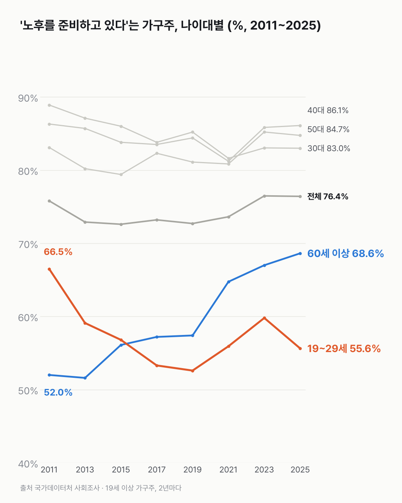
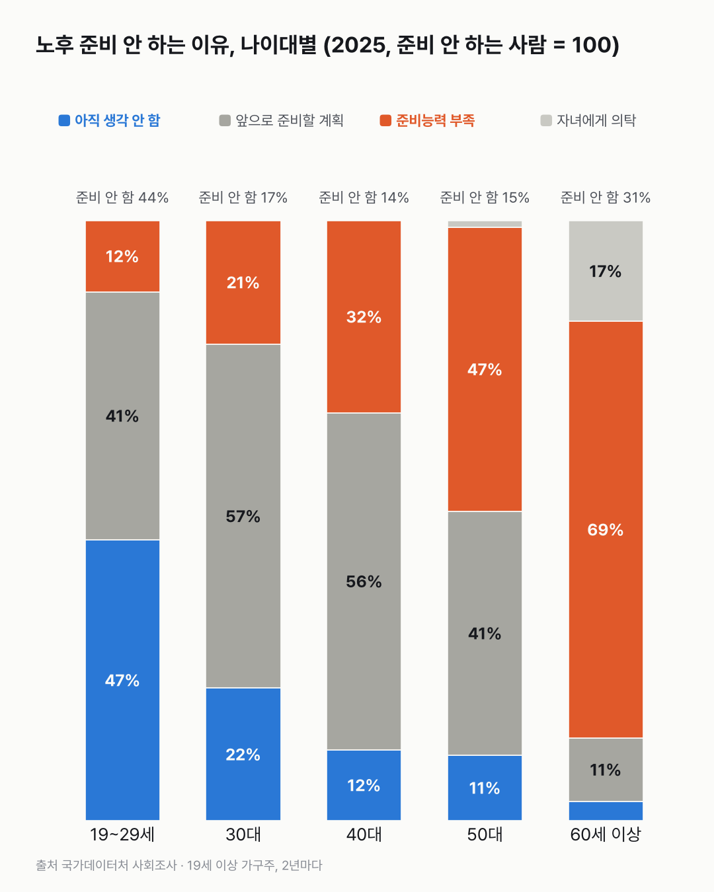

노후 준비, 60세 이상은 늘었고 20대는 줄었어요
전체 비율은 2011년과 거의 같아요. 그 안에서 60세 이상과 20대가 서로 반대로 움직였어요.

- 노후를 준비한다는 가구주(가구를 대표하는 사람)는 2025년 76.4%예요. 2011년 75.8%와 비슷해요.
- 가구주가 60세 이상이면 52.0%에서 68.6%로 늘었고, 19~29세면 66.5%에서 55.6%로 줄었어요.
- 준비하지 않는 19~29세 가구주는 '아직 생각 안 함'이라는 답이 46.8%로 가장 많았어요.
노후 준비는 언제 시작할까요? 표에서 가장 높은 칸은 가운데 나이대였어요. 30~50대 가구주는 83~86%가 준비한다고 답했어요.
전체로는 별로 움직이지 않았어요. 2025년 76.4%로 2011년 75.8%와 비슷하고, 2013~2019년에는 73% 안팎이었어요.
나이대로 나누니 보이더라고요. 60세 이상은 52.0%에서 68.6%로 올랐고, 19~29세는 66.5%에서 55.6%로 내려갔어요. 두 선이 서로 반대로 갔어요.
준비한다면 무엇으로 할까요? 2025년 준비하는 가구주의 61.1%는 국민연금이 주된 방법이에요. 2011년 55.2%에서 늘었어요. 사적연금은 13.5%에서 4.7%로 줄었고, 예금·적금·저축성보험은 14.2%예요.
안 하는 이유는 나이마다 달라요. 19~29세는 '아직 생각 안 함'이 46.8%로 가장 많고, 60세 이상은 '준비능력 부족'이 69.5%예요. 30~40대는 '앞으로 준비할 계획'이 56~57%예요. '자녀에게 의탁'은 준비 안 하는 가구주 중 14.9%(2011)에서 8.6%(2025)가 됐어요.

이 표의 20대는 가구주인 20대뿐이에요. 부모와 사는 20대까지 넣으면 이 선이 어떻게 그려질지, 그게 남았어요.
이 숫자는 어디서 왔나요
출처
| 데이터 | 출처 | 쓰임 |
|---|---|---|
| 노후 준비방법(주된응답, 19세 이상 가구주) (KOSIS DT_1SSWE131R) | 국가데이터처 「사회조사」 | 준비 여부·방법·안 하는 이유, 성별·나이대, 2년 주기 2011~2025년 |
- 대상은 19세 이상 가구주다(2009년은 18세 이상이라 2011년부터 썼다). 부모와 사는 청년처럼 가구주가 아닌 사람은 빠진다.
- 준비 방법 비율은 '준비하는 가구주 = 100', 안 하는 이유 비율은 '준비 안 하는 가구주 = 100' 기준이다.
- 방법 중 '주택연금' 등은 2021년에 새로 생겼고, '퇴직급여'는 2013년 이전에 '퇴직금'으로 조사했다.
- 검증: 모든 칸에서 준비함 + 준비 안 함 = 100%인지 확인했다.
- 교차 확인: 보도된 '성인 71.5%가 노후 준비'는 19세 이상 인구 전체 기준이라 이 표(가구주 기준, 76.4%)와 대상이 다르다. 가구주 기준 수치는 보도에서 찾지 못해 KOSIS 표 값만 근거로 썼다.
- 수집일: 2026-10-29 (KOSIS 오픈API).
기준일
2011~2025년 홀수 해 조사.
한계 5가지
이 데이터로 말할 수 없는 것
- 스스로 답한 '준비하고 있음'이다. 얼마를, 충분히 준비했는지는 알 수 없다.
- 가구주 기준이다. 20대 가구주는 혼자 사는 사람이 많아 같은 20대 전체와 다를 수 있다.
- 주된 방법 하나만 고른다. 국민연금과 저축을 함께 하는 경우도 하나로만 잡힌다.
- 투자를 권하는 글이 아니다. 주식·부동산 등 방법별 비율은 해석하지 않았다.
- 원인은 말하지 않는다.
전제 기록
데이터를 보기 전에 적어둔 것, 그리고 보고 나서 바꾼 것
- 전제 기록(premises)(데이터를 받기 전에 작성)를 따랐다. 받기 전에 대상(가구주)과 항목 변경을 확인했다.
- 받은 뒤 확인: 방법·이유 비율이 하위 집단 기준(준비하는 사람 = 100)이라는 것을 합계로 확인하고 글에 그대로 밝혔다.
질문
노후를 준비하고 있다는 가구주가 얼마나 되는지, 나이대별로는 어떻게 다른지 봤어요. 준비하는 방법과 안 하는 이유도 같이 열어 봤어요.
새 글 나오면 받아 보기
지금은 RSS로 받을 수 있어요. 메일은 아직 준비 중이에요.